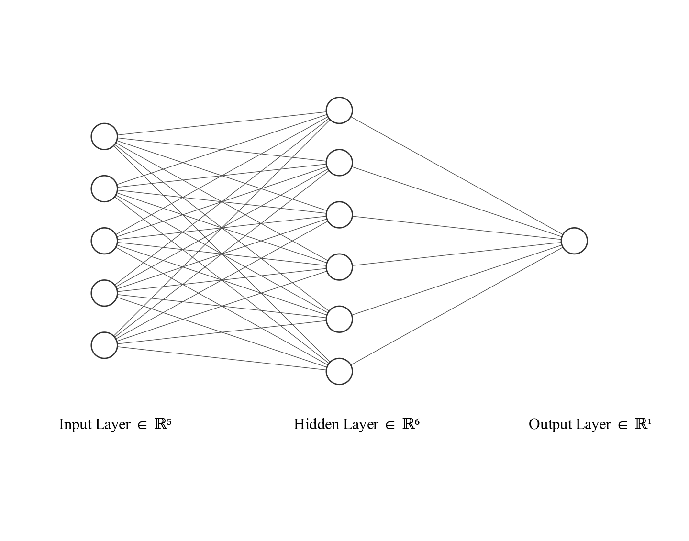
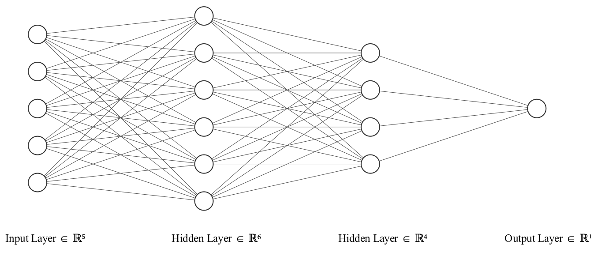

Paper 1: Evaluating Modern Propensity Score Estimation Methods with High-Dimensional Data
Introduction
Traditionally, questions of causality have been addressed through RCTs, in which individuals are randomly assigned to either a treatment group that receives an intervention or a control group [@murnane2010methods; @Rosenbaum.2010]. Randomization ensures that, on average, both groups are balanced on all observable and unobservable characteristics, eliminating the possibility that an intervention’s effect is due to differences in group characteristics [@Rosenbaum.2010]. However, ethical, financial, or practical barriers can prevent a researcher from conducting a randomized experiment in education and broader social science research. Instead, researchers must rely on non-experimental or observational studies in which students self-select or are placed in an intervention without randomization.
Observational studies complicate causal inference because, in the absence of randomization, an imbalance in the distribution of student characteristics (i.e., covariates) between treated and untreated students could lead us to incorrectly attribute a change in the outcome to the intervention or policy, as opposed to differences in group composition [@Rosenbaum.2010]. A vast body of methodological literature has centered on developing quasi-experimental methods that attempt to address the internal validity issues associated with observational data by balancing the observed characteristics of those who received treatment and those who did not. One popular approach is propensity score analysis [@Lee.2010u1; @Lee.2023; @Lee.2017n6s; @Stuart.201027c].
Propensity score analysis is a widely used quasi-experimental method in education research [@Fan.2011q0u; @Stuart.201027c; @Stuart.2023]; it aims to balance observed characteristics between treated and untreated students, similar to how randomization balances observable characteristics between treatment and control groups. The propensity score represents the probability that a student would have received treatment based on their observed covariates [@Rosenbaum.1981e00e; @Rosenbaum.1984a5; @Rosenbaum.1987osp]. There are several ways to use propensity scores to balance student covariates, including matching, in which treated and untreated students with similar propensity scores are paired to form matched sets; weighting, in which treatment groups are re-weighted so that observed covariates are balanced between groups, and stratification, in which the propensity score is used to group students into unique strata with similar scores, to balance observed covariates within each stratum [@Pan.2018jza].
However, certain strict assumptions must be met to estimate unbiased treatment effects correctly using propensity score analysis. For example, the propensity score model must:
Capture all the covariates related to selection into treatment [@Rosenbaum.2010].
Correctly model the association between the student’s characteristics and treatment selection, meaning that all proper interactions and non-linear terms should be specified [@Rosenbaum.2010].
The literature suggests a “kitchen sink” approach for variable selection to have the best chance of meeting the first condition since the penalties are high if a potential confounder is not included in the propensity score model [@webster2021using; @Karim.2018]. To account for unmeasured confounders, sensitivity analysis has been proposed to understand how excluding such confounders could introduce bias into the treatment effect estimation [@li2011propensity]. The literature suggests iterating through various model specifications to meet the second condition. Each iteration adds interactions or non-linear terms until a balance is achieved among the observed characteristics between treated and untreated students [@Stuart.201027c]. If these assumptions are not met, it will lead to biased treatment effect estimates [@Rosenbaum.2010].
At first glance, high-dimensional data (i.e., big data) should be an asset to propensity score analysis, as conventional practices stress the importance of including all available covariates in the propensity score model to increase the chances of capturing all relevant confounders. Nevertheless, this is not the case. The performance of the traditional logistic model for estimating propensity scores tends to decrease as more variables are included in the estimation step [@Hill.201183].
When modeling high-dimensional data, logistic regression may overfit the data or experience issues with perfect separation, resulting in fitted probabilities that are either 0 or 1 [@Hill.201183]. This rigidity can lead to propensity scores with little to no variability. Additionally, as the number of covariates available to estimate the propensity score increases, it becomes increasingly challenging to iteratively model all appropriate interactions and non-linearities using a logistic model [@Hill.201183; @Dorie.20191].
With the rapid advancement of sophisticated machine learning algorithms, there are growing opportunities to develop and apply new methods for estimating propensity scores, particularly with high-dimensional data [@hernandez2019systematic]. These machine learning algorithms offer an automatic, data-driven way to capture non-linearities and non-additivity in the propensity score estimation model, potentially leading to a more balanced covariate distribution without manual iteration. Previous propensity score simulation research has focused on low-dimensional datasets [@Setoguchi.2008ulg; @Lee.2010u1; @Stuart.201027c; @Cannas.2019; @McCaffrey.2004pse]. To date, limited research has evaluated the performance of these machine-learning methods when applied to high-dimensional data, particularly considering complexities in both the propensity and outcome model.
Additionally, recent advances in computing and software have generated a novel machine-learning algorithm architectures that could be used to estimate propensity scores, DNNs [@LeCun.201587; @Pang.2019kdf; @hernandez2019systematic]. DNNs are artificial intelligence algorithms modeled after the architecture of the human brain [@LeCun.201587; @Pang.2019kdf]; they are widely used across various industries for complex prediction and classification tasks and effectively model complex high-dimensional data. The flexibility of DNNs enables them to capture complex interactions and non-linearities and perform automatic variable selection [@LeCun.201587; @Pang.2019kdf; @hernandez2019systematic]. However, there has been limited application of DNNs to causal inference, particularly in social science research.
In this study, I compare the performance of the traditional logistic regression to various machine learning methods with high-dimensional data using propensity score weighting. In addition, I overcome the limitations of existing methods by proposing a novel DNN-based approach to the estimation of propensity scores and illustrating a novel framework for generating multi-type, correlated high-dimensional data replicating the high-dimensional administrative data that is becoming available to education researchers.
The remainder of this document is structured as follows: First, I will review the relevant literature for this study. Then, I will describe my simulation approach and present my results. Finally, I will conclude with a discussion section that focuses on the contributions of my study.
Literature Review
In this section, I will review the literature on causal inference and propensity score analysis, focusing specifically on machine-learning approaches for estimating propensity scores. Additionally, I will draw from the literature on neural network approaches, including deep neural networks, to motivate the development of my DNN-based method for estimating propensity scores.
Neyman–Holland–Rubin Model for Causal Inference
The Neyman–Holland–Rubin model, also known as the Rubin causal model, forms the basis of my approach to causal inference [@rubin1976inference; @rubin2005causal; @holland1986statistics; @neyman1923application]. A core tenet of the Rubin causal model states that a treatment effect is the difference between two potential outcomes for an individual [@rubin2005causal]. Consider a dichotomous treatment variable (\(Z\)), where \(Z_i = 1\) represents the \(i\)th student being in the treatment group—such as a college access program—and \(Z_i = 0\) represents the student not being in the treatment group. Let \(Y_{iz}\) be a potential outcome for student \(i\) depending on treatment assignment \(Z\), such that an individual student has two potential outcomes. \(Y_{i1}\) is the potential outcome had student \(i\) participated in the college access program, and \(Y_{i0}\) is the potential outcome had that same student not participated. Note, the potential outcomes framework is based on the stable unit value assumption (SUTVA), which states there is only one version of the treatment condition and that the potential outcomes of an individual are not influenced by the treatment assignment of any other individual [@Rosenbaum.2010]. Therefore, the treatment effect of the program for student \(i\) would be the difference in their two potential outcomes:
\[
\tau_i = Y_{i1} - Y_{i0}
\tag{1}\]
However, in the real world, we do not simultaneously observe both potential outcomes for the same student. We can only observe student \(i\)’s potential outcomes in the college access program if they participated; this is why the fundamental problem of causal inference is a missing data problem [@holland1986statistics]. Although we cannot directly observe these potential outcomes, under certain assumptions, we can estimate the average treatment effect (ATE) as the population average of all individual treatment effects, defined as:
where \(\mathbb{E}(Y_{i1})\) is the expected value of all students in the treatment group and \(\mathbb{E}(Y_{i0})\) is the expected value of all students in the control group. In the context of a true experiment in which students are randomly assigned to treatment conditions, we can straightforwardly estimate the ATE since, with a large enough sample size, both treated and control students will be balanced on all observable and unobservable characteristics. A randomized experiment ensures that \(Y_1\) and \(Y_0\) are independent of treatment assignment (\(Z\)), and therefore, the treatment effect can be regarded as causal [@Rosenbaum.2010].
In addition, we may also be interested in estimating the ATE among those who received the treatment. In this case, we may be interested in the average treatment effect on the treated (ATT) [@Rosenbaum.2010], which is defined as:
In behavioral and social science research, conducting a randomized experiment may not always be possible due to ethical, financial, or practical limitations [@Bai.2011p7; @Pan.2018jza]. Such limitations lead researchers to rely on non-experimental or observational data, where students either self-select or are assigned to an intervention without randomization. This reliance creates a challenge for causal inference; an imbalance in the distribution of student characteristics (i.e., covariates) between the treated and untreated students could lead to incorrect attributions of changes in the outcome to the intervention rather than differences in group composition [@Austin.2011glm].
For example, consider our earlier example of the college access program. The underlying treatment assignment would be unknown if students were not randomized into treatment or control groups but instead self-selected into the program. It could be that students who self-select into the program are generally more interested in going to college than those who did not sign up. Given this imbalance in college interest, we may incorrectly attribute higher rates of college going to the treatment instead of differences in college interest between treated and untreated students. In other words, without randomization, observational studies cannot ensure that a student’s outcome is independent of treatment assignment (\(Z\)) [@Rosenbaum.2010].
In order to overcome the challenges posed by observational data, various statistical methods have been developed to estimate unbiased treatment effects. These methods include instrumental variable approaches, regression discontinuity, synthetic control, and propensity score analysis [@Rosenbaum.2010]. For this dissertation, I focus on propensity score analysis, a quasi-experimental method that attempts to balance observed group differences using a balancing score derived from student-level covariates.
Propensity Scores
Rosenbaum and Rubin first introduced the concept of propensity scores to enhance the accuracy of capturing unbiased treatment effects in observational studies [@Rosenbaum.1981e00e; @Rosenbaum.1984a5; @Rosenbaum.1987osp]. Propensity score analysis has become one of social and behavioral researchers’ most widely used quasi-experimental methods, particularly in applied educational research [@Lee.2010u1; @Stuart.201027c].
Rosenbaum and Rubin define a propensity score, \(e(x)\), as the probability of assignment to treatment conditional on observed pre-treatment covariates, defined as:
\[
e(x) = Pr(Z=1|\boldsymbol{X})
\tag{4}\]
Propensity scores are typically estimated as predicted probabilities from a logistic regression model. The binary outcome variable indicates whether a student received treatment and is being predicted based on individual student characteristics (\(\boldsymbol{X}\)). The estimated propensity scores range from 0 to 1, with values closer to 1 indicating that an individual is more likely to be assigned to treatment. According to Rosenbaum and Rubin, if the propensity scores are balanced between the treatment and control groups, the distribution of observed covariates between the two groups will also be balanced [@Rosenbaum.1981e00e; @Rosenbaum.1984a5; @Rosenbaum.1987osp]. This prediction means that, in theory, two students with similar propensity scores should have a similar distribution of observed covariates.
Researchers can adjust for the imbalance in the joint covariate distribution between the treatment and control groups by conditioning on the propensity score using various techniques, including matching, stratification, and weighting. Matching involves pairing treated students with control students based on the proximity of their propensity scores, while stratification involves grouping students into unique strata based on their propensity scores [@Bai.2011p7]. Weighting involves reweighing students in the sample so that the distribution of propensity scores in the control group is similar to that of the treated group [@Pan.2018jza]. These methods aim to approximate true randomization conditions by using the propensity score to eliminate bias in the treatment effect due to observed confounding and approximate the true causal effect [@Pan.2018jza]. However, for this to be achieved, certain assumptions must hold.
Assumptions for Identification and Estimation of Causal Effects
Several assumptions must be met to identify and estimate an unbiased treatment effect using propensity scores. These include SUTVA, the strong ignorability assumption, and the region of common support [@rubin2005causal]. It is important to note that, while necessary, these assumptions are insufficient for unbiased causal inference using propensity scores. Furthermore, it can be challenging to assess the validity of these assumptions in practice, which can impact the validity of the estimated treatment effects [@Bai.2011p7].
The first assumption, SUTVA, states that there is only one version of the treatment condition and that the potential outcome of an individual is not influenced by the treatment assignment of any other individual [@Pan.2018jza; @Rosenbaum.2010]. Thus, the outcome of a student is independent of whether another student is assigned to the treatment or control group.
The strong ignorability assumption states that the potential outcome of an individual is conditionally independent of treatment assignment if we successfully conditioned on all covariates related to treatment, \(Y_1, Y_0 \perp Z|\boldsymbol{X}\). Randomization satisfies, in theory, this assumption in experimental studies, which ensures that treatment assignment is independent of an individual’s outcome [@Rosenbaum.2010]. However, this assumption holds in observational studies only if all covariates related to both treatment assignment and outcome are included in the propensity score model [@Rosenbaum.1981e00e; @Rosenbaum.1984a5; @Rosenbaum.1987osp]. In practice, it is unlikely that all such covariates are included, and sensitivity analysis is necessary to assess the influence of unmeasured confounding [@li2011propensity].
Finally, the region of common support (i.e., positivity) assumption states that there must be sufficient overlap in the estimated propensity score distribution between the treatment and control groups [@Rosenbaum.2010]. This overlap is crucial to ensure that suitable comparisons can be found for treated individuals. The adequacy of common support can be assessed by plotting the distribution of the propensity scores in both the treatment and control groups and evaluating if there is sufficient overlap between the two distributions.
Estimating causal effects from observational data is possible if these assumptions are satisfied. However, some of these assumptions are untestable [@rubin2005causal; @Rubin.2004]. For instance, in observational data, the underlying mechanism of treatment assignment is usually unknown, making it difficult to determine if all covariates related to treatment assignment have been included in the propensity score model. As a result, propensity score analysis should be viewed as a method to reduce, but not eliminate, the bias in estimated treatment effects in observational studies. It is crucial to carefully consider which covariates are included in the propensity score model and to conduct sensitivity analysis to assess the impact of unmeasured confounding.
Covariate Selection
The selection of covariates in propensity score analysis should be based on variables that are theoretically grounded and related to both treatment assignment and the outcome, also known as confounders [@buhlmann2011variable; @Brookhart.200646n]. However, there is a debate in the literature about which covariates should be included [@Karim.2018; @Austin.2011glm]. Some simulation studies have found that including confounders or covariates that only affect the outcome leads to more precise estimates of treatment effects [@austin2007comparison]. While, including only covariates that affect treatment assignment leads to increased variance in the estimated treatment effect with no reduction in bias [@Brookhart.200646n].
In practice, determining which covariates are confounders or related to the treatment or the outcome can be challenging. To reduce the risk of excluding potential confounders, the literature suggests using a “kitchen sink” approach to variable selection, where all available covariates are included in the estimation of the propensity scores [@webster2021using; @Karim.2018]. Additionally, it is crucial to ensure that the propensity score model captures the correct functional form of the covariates, including all relevant interactions and non-linear terms [@Rosenbaum.2010; @Pan.2018jza]. If the propensity score model is misspecified, it will result in biased treatment effect estimates [@Guo.2020jcj; @Guo.2014].
To balance the observed characteristics between treated and untreated students, iterating through various model specifications that include interactions and non-linear terms among the covariates is recommended [@Rosenbaum.2010]. However, this iterative process can become challenging and time-consuming as the number of available covariates increases, especially when conducting propensity score analysis with high-dimensional data.
Estimating Propensity Scores
Estimating the propensity score (\(e(x)\)) is a crucial step in propensity score analysis, as a misspecified propensity score model can result in propensity scores with little variability or extreme scores that lead to biased treatment effect estimates [@Hill.201183]. Propensity scores can be estimated using parametric or non-parametric models as long as the model outputs a probability that is bounded between 0 and 1. Logistic regression is a widely used parametric model for estimating propensity scores, particularly in applied educational research [@Stuart.2023].
Logistic Regression
Logistic regression is the most common parametric model used to estimate propensity scores in the social science literature due to its ease of interpretation and familiarity with many applied researchers and its ability to accommodate continuous and categorical covariates [@keller2015neural]. The logistic model is defined as follows:
where \(Z\) is a binary indicator equal to 1 if a student is in the treatment group and 0 otherwise, regressed on \(\boldsymbol{X}\) a vector of observed covariates. The logistic regression outputs predicted probabilities that are continuous and bounded between 0 and 1 (i.e., propensity scores).
Although logistic regression is the most commonly used method for estimating propensity scores, it may not always be the best option for inference [@Lee.2023; @Lee.2010u1]. Several simulation studies have found that using logistic regression for propensity score modeling can result in biased treatment effect estimates when the model is misspecified, especially in complex data where non-linear and non-additive terms are not included in the propensity score model [@Lee.2010u1; @Setoguchi.2008ulg; @Cannas.2019; @McCaffrey.2004pse]. This situational bias occurs because parametric models, such as logistic regression, require assumptions about covariates’ functional form and distribution [@Hill.201183]. When estimating propensity scores with many covariates, this problem can be particularly pronounced [@Hill.201183]. In high-dimensional settings, the logistic model may produce propensity scores outside the desired range [0,1] [@Hill.201183]. However, non-parametric machine learning algorithms have been proposed as alternatives for estimating the propensity score [@Lee.2010u1; @Setoguchi.2008ulg; @Cannas.2019; @McCaffrey.2004pse].
Machine Learning Approaches
Machine learning algorithms have recently gained popularity in the causal inference and propensity score literature due to these algorithms being highly flexible and able to model complex functional forms iteratively without explicit manipulation from the researcher [@cui2020causal; @grimmer2015we; @athey2015machine]. By making a simple modification, such as applying a logistic activation function to the output layer of a neural network, these algorithms can output bounded probabilities that can be utilized as propensity scores. Given the success of machine learning algorithms for prediction tasks, it is reasonable to think they are worthy candidates for the propensity score estimation problem, which is a prediction problem. Broadly, machine learning algorithms used in propensity score estimation can be classified into tree-based, ensemble methods, and—the focus of my dissertation—neural network-based approaches.
Tree-Based Methods
One popular machine learning approach to estimating propensity score is classification and regression trees (CART) [@denison1998bayesian]. This algorithm recursively divides data into subsets based on individual covariates to predict the probability of membership assignment of a given individual. To generate propensity scores, the outcome is set to a binary indicator of treatment assignment (\(Z\)). This algorithm splits covariates by level of importance, with the first split being the covariate that can produce the most distinctive split. For example, if a student’s age is related to the treatment assignment, the first split would divide the data into students with \(age > 15\) and \(age < 15\). The algorithm continues by splitting the data by the next most influential covariate, creating a tree-like structure (see Figure 1). Splitting stops when the data are binned into unique “branches,” that minimize the prediction error such that an additional split would not improve the prediction of treatment assignment. The final “branches” of the model represent the individual groups of students with similar propensity scores [@denison1998bayesian]. The output of CART is the predicted probabilities, which can be used as propensity scores. Like logistic regression, the CART algorithm can handle continuous and categorical covariates. However, unlike logistic regression, CART is insensitive to outliers and can automatically model interactions and higher-order terms [@Westreich.2010; @Wyss.2014jfk]. Through a simulation study, @Lee.2010u1 found that CART outperformed logistic regression in reducing bias and balancing covariates when the data-generating mechanism had complex associations.
Figure 1: Simple Decision Tree Predicting Students GPA Based on Gender and Homework Grade
However, a well-known issue with CART is its tendency to overfit the data [@Lee.2010u1]. A modified version of CART was developed to address this issue; it prunes back branches that do not contribute to reducing prediction error, referred to as pruned-CART [@Westreich.2010]. Although pruning can alleviate some of the changes in overfitting, a significant drawback of CART is its reliance on a single tree, which may be weak in predicting the propensity score.
Ensemble Methods
Ensemble methods are a family of algorithms that generate multiple trees to predict treatment assignment [@Lee.2010u1; @Stuart.2023; @Stuart.201027c]. By combining the predictions from multiple trees, ensemble methods can improve the accuracy of predictions since many weak trees together can create a better prediction than any single tree [@Lee.2010u1]. A popular ensemble method is bootstrapped aggregated CART, referred to as bagged-CART, which fits multiple CARTs on bootstrapped data samples [@Lee.2010u1]. Growing trees on bootstrapped samples reduce the chances of overfitting the data. Each tree will generate a probability that an individual will be assigned to treatment. The final probability of membership is based on aggregating the probabilities of assignment across all trees (i.e., forest). A more robust ensemble method is random forest [@Suk.20215xt]. Compared to CART and Bagging, the random forest algorithm grows trees by randomly selecting covariates and individuals to grow individual trees. With each new tree, the algorithm “learns” the best combination of covariates to generate a final probabilistic prediction based on the “forest” it has created. These random forest techniques have shown significant promise in predicting propensity scores in complex data associations [@Lee.2010u1; @Cannas.2019]. However, with the recent advances in computing power, non-tree-based methods, such as neural networks, have increased in popularity [@collier2021estimating; @keller2015neural; @Westreich.2010; @Dreiseitl.2002tri; @Collier.2022].
Artificial Neural Network Architectures
Artificial Neuron
The building block for artificial neural networks was initially developed by psychologist Frank @rosenblatt1958perceptron with their idea of a perceptron or artificial neuron, see Figure 2. An artificial neuron is a simplified mathematical model of neurons in our brain [@LeCun.201587]. Neurons are biological switches that take input signals from other neurons that cause the neuron to fire. Neurons can be thought of as simple processing units. In our brain, these individual neurons are connected into vast networks of billions of neurons, where the outputs of one neuron become inputs of another, allowing for the transmission of complex information [@LeCun.201587].
Figure 2: Structure of a Perceptron - Artificial Neuron
The artificial neuron receives a set of inputs \(X_i = (X_1, X_2, \dots, X_p)\) with corresponding weights \(w_i = (w_1, w_2, \dots ,w_p)\) that represent the strength of each input variable. The inputs are multiplied by their corresponding weights and then summed with a bias term \(\beta_0\) to create a linear transformation of the inputs. The weight and bias terms are similar to the slope and intercept in linear regression. The linear transformation is then passed through an activation function \(g(z)\) to generate an output (\(\hat{y}\)) that is either a 1 or 0, or a value between 0 and 1 if the activation function is set to be linear, such as the logistic function (also refered to as the sigmoid function).
The artificial neuron in Equation 6 can be used to solve a binary classification problem. In our case, we are interested in classifying each student in our sample as belonging to the treatment or control condition based on observed covariates. If the activation function \(g(z)\) is set to a logistic function, the desired propensity score will be guaranteed an output value between 0 and 1. For the neuron to make accurate predictions for each student, it must “learn” the correct weight and bias parameter specifications, similar to finding the correct slope and intercept in bivariate data.
This learning process starts by feeding each observation in the sample into the neuron. The first pass initializes the weights and biases set to random numbers. The outcome variable is set to the binary indicator of treatment assignment, so a predicted probability of treatment assignment is calculated for each student. However, the initial pass of the data is likely to generate incorrect predictions as the weights and bias terms are initialized to random numbers. In other words, the prediction of treatment assignment (\(\hat{y}\)) will be far from the actual treatment assignment (\(y\)), leading to a high associated loss.
It is important to note that this learning process is an optimization problem that can be solved through various optimization algorithms such as gradient descent or stochastic gradient descent [@goodfellow2016deep]. The choice of optimization algorithm will impact the speed and accuracy of the learning process.
The goal of the artificial neuron and many machine learning algorithms is to correctly learn the values of the weights and bias parameters that minimize a loss function, such as the mean squared error (MSE). The neuron will update the bias and weight parameters iteratively for each subsequent data pass to minimize the loss function. This update is typically done using a process known as backpropagation. After a user-defined number of iterations, the neuron will be optimized with bias and weight terms that best predict treatment assignment. A single neuron may be appropriate for simple classification problems with linear covariate associations. However, as the complexities of covariate associations increase, more neurons may be needed to learn complex functional forms.
Single-Layer Neural Network
Following the development of the artificial neuron, researchers began to model more complex processing units composed of interconnected artificial neurons organized in layers. This work culminated in creating the single-layer feed-forward neural network (NN), as shown in Figure Figure 3. NNs are referred to as single-layer because they have a single middle layer of interconnected artificial neurons. These NNs can learn very complex data representations by generating various non-linear representations of the data through multiple artificial neurons [@derry2023neural]. These non-linear outputs are passed into a final layer that pools the outputs of the individual neurons into a non-linear function, \(f(x)\), generating a prediction (\(\hat{y}\)). By having multiple artificial neurons calculating predictions on various non-linear combinations of the input variables, these networks can learn complex non-linear and non-additive associations between covariates.

Figure 3: Structure of Single-Layer Neural Network
The single-layer NN comprises a series of artificial neurons organized into three layers [@derry2023neural]. The first layer is the input layer of \(p\) variables, \(X_i=(X_1, X_2, \dots, X_p)\), our observed covariates. These input variables are fully connected to the second layer—a hidden layer—which comprises \(K\) hidden neurons, \(A = (A_1, A_2, \dots, A_k)\). The hidden neurons are identical to the artificial neurons mentioned previously, but the activation function is swapped out for a non-linear function. Each hidden neuron calculates its prediction based on its unique non-linear combination of variable inputs and associated weight and bias parameters. The last layer is the output layer, which pools the non-linear outputs of the hidden neurons and passes them as inputs to a non-linear output function, \(f(x)\), which generates the final prediction (\(\hat{y}\)). The interconnected neurons in NN allow it to learn more complex associations between covariates and treatment assignment than a single artificial neuron [@derry2023neural; @hernandez2019systematic].
where each hidden unit \(A_k, k =1,\dots,K\) is created from a weighted linear combination of input variables, \(X_1,X_2, \dots,X_p\) that are applied to an activation function \(g(z)\) resulting in an “activation” for each hidden neuron, \(A_k\):
\(w_{k0}\) and \(w_{ki}\) are the bias and corresponding weights for each \(A_k\) hidden neuron. We can regard these activations as individual predictions of each hidden neuron. These predictions are then pooled and passed to the output function (\(f(x)\)), which has its bias term, \(B_0\), and produces a final prediction (\(\hat{y}\)).
The learning process of a NN works similarly to that of a single neuron, but instead of learning only one set of weights and bias terms, it learns multiple sets simultaneously. The ultimate goal of the NN is to minimize the loss function by learning the correct weights and bias parameters. Unlike a single artificial neuron, NN can efficiently learn complex non-linear relationships between covariates and treatment assignments [@james2013introduction]. A handful of studies have evaluated the performance of NN in estimating propensity scores in a low-dimensional setting [@collier2021estimating; @keller2015neural; @Setoguchi.2008ulg; @Cannas.2019]. These studies suggest that NNs represent a suitable method for estimating the propensity score and generally outperform logistic regression in reducing bias and balancing covariates.
The development of NNs has led to the creation of more complex NN architectures, such as DNNs or multilayer neural networks [@LeCun.201587]. These networks consist of multiple hidden layers and varying numbers of hidden neurons.
Deep Neural Networks
The DNN architecture captures even more complex relationships among covariates than a single-layer NN [@Pang.2019kdf; @hernandez2019systematic]. This effectiveness is due to the multiple hidden layers in the network, making it “deep”. The diagram in Figure 3 shows a DNN with two hidden layers (\(L_1, L_2\)).

Figure 4: Structure of Deep Neural Network with Two Hidden Layers
The first hidden layer functions like the middle layer in an NN (as described in Equation Equation 8). The first layer in a DNN can be represented as:
Each hidden unit in the first layer, \(A_k^{(1)}, k =1,\dots,K\) is created from a weighted linear combination of the input variables, \(X_1,X_2, \dots,X_p\). The weighted linear combination is then applied to a non-linear activation function \(g(z)\), resulting in output for each hidden neuron in the first layer, \(A_k^{(1)}\).
The second hidden layer \(L_2\) takes as inputs the outputs of \(A_k^{(1)}\) of the first hidden layer and computes a new non-linear transformation, \(A_k^{(2)}\). The new activations of the second layer are calculated as follows:
where each hidden unit in the second layer \(A_l^{(2)}, l =1,\dots,K\) is a function of the output of the weighted non-linear combinations of \(A_k^{(1)}\), this process can be extended to additional hidden layers. As data move from layer to layer, DNNs can approximate increasingly complex functional forms [@james2013introduction]. The complexity should inform the choice of the number of hidden layers in a DNN of the problem and the computational resources available [@james2013introduction]. While more hidden layers can allow the network to capture increasingly complex functional forms, they also have a higher computational cost. In general, three hidden layers are sufficient for capturing almost any functional form in problems outside of image and speech recognition [@james2013introduction].
Deep Neural Networks in Causal Inference
The popularity of DNNs in causal inference has increased in recent years due to their ability to uncover complex relationships in high-dimensional data with improved precision compared to traditional statistical and machine learning methods [@Pang.2019kdf; @hernandez2019systematic]. This capability to capture intricate relationships in large-volume data makes DNN algorithms suitable for applications in propensity score analysis and other causal inference methods. DNNs have garnered substantial attention in industry and academic research, making substantial advances in image recognition and natural language processing [@james2013introduction]. For example, ChatGPT a DNN-based learning model has recently taken the world by storm and has permeated into the educational discourse. The recent investment by Google in software development has made it easier to develop DNN models using high-level application programming interfaces (APIs) such as Keras, which is a popular deep learning library for building and training neural networks [@Pang.2019kdf].
To date, DNNs have received limited attention in the broader literature on causal inference, with most research focused on medical or genomic applications [@Kale.2015cza; @Iglesias.2021ruh]. DNNs have not yet been widely adopted in social science, likely due to a limited understanding of implementing these algorithms [@Farrell.2021]. As high-dimensional datasets become more prevalent in social science research, it is expected that DNNs will become more widespread and a promising area of investigation in the future. Despite this potential, there has been limited research that incorporates DNNs into propensity score analysis.
Only two medical peer-reviewed studies have applied DNNs for propensity score estimation [@Whata.202204a; @Weberpals.2021lch]. @Weberpals.2021lch used data from around 130,000 cancer patients to construct a simulated dataset with 31 baseline covariates, where the treatment was a fictional cancer drug, and the outcome was a binary survival indicator. Employing a specific DNN architecture with three hidden layers, known as an “autoencoder”, they found that DNN reduced confounding bias in treatment effect estimates compared to the traditional logistic model with manual variable selection. Conversely, @Whata.202204a compared the performance of logistic regression to a DNN with four hidden layers through a simulation (with 15 covariates) and a real-world application. In their simulation, they varied the level of complexity in the population selection model but not the outcome model. The results showed that DNN outperformed logistic regression regarding covariate balance, classification accuracy, and absolute relative bias.
Both studies demonstrate the growing promise in using DNNs for causal inference and suggest that DNNs may be a valid approach for estimating the propensity score. My dissertation builds upon these studies by comparing DNNs to traditional logistic regression and established machine learning methods in the propensity score simulation literature. Additionally, my study will test the complexity of both the outcome and selection models, making it the first to examine the use of DNNs for propensity score estimation outside of medical research and with high-dimensional data that resembles high-dimensional administrative datasets encountered in educational research.
Method
My first dissertation study focuses on a statistical simulation that evaluates the performance of several modern machine learning techniques, including CART, bagged-CART, random forest, and a single-layer neural network. These techniques will be compared to the traditional logistic regression and my proposed DNN-based approach in estimating the propensity score to recover the ATE using propensity score weighting. I will specifically examine the impact of different data conditions (i.e., low vs. high-dimensional context) and the inclusion of complexities in the population treatment and outcome models on estimating the ATE and covariate balance. The choice of these specific conditions is motivated by the need to understand how the performance of the machine learning techniques varies across diverse data structures, which is crucial for determining their applicability and robustness in real-world scenarios. Additionally, assessing the impact of complexities in the treatment and outcome models will provide insights into the strengths and limitations of each technique, guiding researchers in selecting the most appropriate method for their studies.
My study will use a Monte Carlo simulation design informed by previous propensity score estimation studies conducted by @Setoguchi.2008ulg, @Lee.2010u1, @Cannas.2019, @keller2015neural, @collier2021estimating. My simulation code was built upon @Cannas.2019 publicly available code and will follow best practices in statistical simulation as outlined by [@Morris.2019abs]. In the following sections, I will detail the simulation design for this study, including the data generation process, estimands of interest, specific method specifications, and performance measures.
Data-Generation Mechanisms
The data generation mechanism for my simulation was informed by the evaluation I conducted as part of my second dissertation study, which involved a large-scale evaluation of an AI chatbot intervention using high-dimensional administrative data. I based the coefficient values of the covariates and error variances on those data. By basing my simulation on real-world data, I aim to address the limitations of statistical simulations that may not generalize well to real datasets [@huber2013performance].
Covariates
I used a programmatic approach to generate \((X_1,X_2,X_3,\dots,X_p)\) correlated covariates. Specifically, I simulated three covariate conditions with varying covariates generated, with \(p = 20, 100, 200\). The 20 covariate conditions represented the average number of covariates used in typical propensity score analyses in educational research [@huber2013performance; @Powell.20204oe]. The remaining two conditions, with \(p = 100\) and \(p = 200\), were chosen as they represent high-dimensional datasets commonly encountered in education research [@grimmer2015we; @Song.2020tde; @Einav.2014; @Bird.2022gc4; @Hill.201183].
Much of the literature on propensity score simulation generates uncorrelated covariates [@Setoguchi.2008ulg; @Cannas.2019; @Lee.2010u1]. However, this does not represent the correlated variables typically found in administrative data. To address this, all covariates were generated from random draws from a multivariate normal distribution with \(\mu=0\) and \(\sigma=1\), with a specified correlation matrix with correlations ranging from -0.3 to 0.3, using the mvrnorm function from the MASS package in R [@ripley2013package]. Additionally, by inducing bounded correlations that straddle 0, I aim to circumvent potential issues that may arise when correlations approach -1 or 1, such as collinearity.
In order to better mimic the actual structure of variables in administrative data sets and to preserve the correlation structure, I used the inverse cumulative distribution function (CDF) approach [@li2021improving] to convert the initial random pull of covariates from the multivariate normal distribution to three distributions: a normal distribution with a mean of 0 and standard deviation of 1, a uniform distribution with a range of 0 to 1, and a Bernoulli distribution with a probability of success set at 0.5. The purpose of this step is to create more realistic and heterogeneous data that reflects the distribution of variables typically observed in real-world datasets, while maintaining the same correlation structure. Although some correlations may be slightly suppressed, they should be equal on average across the simulation. The covariates were constructed such that half affected both treatment and outcome (i.e., confounders), a quarter affected treatment only, and the remaining quarter affected the outcome only. This approach is in line with other propensity score simulation studies [@Setoguchi.2008ulg; @Cannas.2019; @Lee.2010u1].
Sample Size
I used a fixed sample size of 10,000 for all conditions. This sample size is larger than typical in many propensity score simulation studies (n = 500 to 2,000). The choice of this sample size is motivated by my goal to mimic real-world high-dimensional administrative data. Additionally, it was necessary to have a sufficiently large sample size to obtain accurate estimates, particularly when employing computationally intensive methods.
Population Treatment Assignment Models
I generated the population treatment assignment models using standard logistic regression. These models can also be referred to as population propensity score models, as they generate the true probability of being assigned to treatment. The following logistic regression model represents the general structure of these models.
\(X\) represents covariates and their associated coefficients (\(\beta\)). The output, \(Pr(Z = 1|X)\) is the probability of assignment to the treatment condition (i.e., the propensity score, \(e(x)\)). The intercept, \(\beta_0\), was set to 0.25, and the remaining coefficients, \(\beta_i\), were randomly assigned values between -0.4 and 0.4, which were based on the corresponding standardized coefficient values in the Common App evaluation.
I generated two population treatment assignment models, Base(T) and Complex(T). To add complexity to the complex models, I included interactions (non-additivity) and higher-order terms (non-linearity) for the confounders and covariates related to treatment.
Base(T): includes only main effects, which assumes a linear relationship between covariates and treatment assignment. I consider this the base model, which is expressed using the following formula:
\(X\) represents covariates and their associated coefficients \(\beta\). The output is the assignment probability to the treatment condition (i.e., propensity score).
Complex(T): my simulation’s most complex population treatment assignment model. To construct it, I incorporated quadratic terms for half of the covariates that are both confounders and related to treatment and interactions with another half of the same group of covariates. This design aims to account for complex relationships between covariates and treatment assignment.
Using the propensity scores generated from these population selection models, I generated a binary treatment assignment variable by comparing an individual’s true propensity score to a random draw from a uniform distribution between 0 and 1. If the propensity score of an individual was higher than the random draw of the uniform distribution, the individual was assigned to treatment such that \(Z = 1\), otherwise \(Z = 0\). This approach should approximate a probability of assignment to the treatment of 0.5, which is the probability of assignment to a randomized experiment with binary treatment.
Population Outcome Models
In addition to the population treatment assignment models, I also generated two population outcome models. To vary the level of complexity between the covariates and the outcome, I included interactions and higher-order terms on covariates related to outcome and overall confounders. Adding complexities to the outcome model is relatively novel in the propensity score literature. However, it is more representative of the complex associations found in datasets in educational research.
The continuous outcome, \(Y\), was generated through regression models. The values of \(\alpha\) were based on the Common App evaluation, such that the intercept \(\alpha_0\) equaled -0.18, and the remaining \(\alpha\) coefficients received a random value between -0.2 and 0.3. \(X_i\) represents \(p\) covariates and their associated coefficients (\(\alpha_i\)). The error term \(\epsilon\) was set to have a mean of 0 and a variance of 0.17, based on the error term in the Common App evaluation. The binary treatment variable \(Z\) was multiplied by \(\gamma\), representing the population treatment effect, and set to 0.3. This treatment effect is consistent with the small effects typically observed in education research, where the average effect size equals 0.28 SD [@richardson2011eta].
The general structure of the population outcome models is defined as follows:
\[
Y = \alpha_0 + \gamma Z + \sum_{i=1}^{p} \alpha_iX_i + \epsilon
\tag{14}\]
Base(Y): the base model; includes only main effects, which assumes a linear relationship between covariates and outcomes. I consider this the base model, which is expressed using the following formula:
Complex(Y): describes the complex model, which includes the linear terms in addition to non-linearities and non-additivities, which were generated in an identical way to how they were generated in the population treatment outcome models:
Using the simulated data, I estimate propensity scores using standard logistic regression and popular machine learning techniques commonly used in the propensity score estimation literature. This estimation includes a CART, bagged-CART, random forest, and a single-layer neural network. The propensity scores are estimated using all \(p\) covariates as main effects in all cases. This scenario is unique in that all confounders are included in the propensity score estimation, which is not typically the case in practice. However, given my interest in evaluating the ability of these methods to recover the true unbiased treatment effect, this approach is well-suited. Future research should examine the performance of these methods when a subset of confounders is omitted from the propensity score estimation model.
Here I present the specification of each method used to estimate propensity scores:
Logistic regression: standard logistic regression with only main effects, using the R glm command [@team2009language].
Classification and Regression Trees (CART): using the R rpart package [@therneau2015package] with default parameters and recursive partitioning.
Bagged CART: bootstrapped aggregated trees using the R ipred package [@peters2009package]. I changed the default parameter to use 100 bootstrap replicates to align with the @Lee.2010u1 simulation.
Random Forest: parallel tree generation on subsamples based on randomly selected covariates using the R randomForest package with default parameters [@liaw2002classification].
Single-Layer Neural Network (NN): I used a simple three-layer NN that consisted of an input layer, one hidden layer, and an output layer. The input layer consisted of \(p\) covariates. The hidden layer comprised hidden neurons equal to 1/3 of the input covariates, a common practice in NN applications [@boger1997knowledge]. I used a ReLU activation function in the hidden layer for computational efficiency. The ReLU function introduces non-linearity into the network and allows it to learn more complex relationships between input covariates and output. In the output layer, I used a sigmoid activation function to obtain probabilities bounded between 0 and 1. The sigmoid function smoothly maps any input value to a probability between 0 and 1, making it suitable for binary classification tasks. The NN was trained and fit using the R Keras package [@chollet2015keras], which interfaces with Python.
Deep Neural Network (DNN-2): I used a four-layer deep neural network with an input layer, two hidden layers, and an output layer. The input layer consisted of \(p\) covariates, and each hidden layer comprised hidden neurons equal to 1/3 of the input covariates. Similar to the NN, I used the ReLU activation function in the hidden layers. In contrast, the output layer consisted of a single neuron with a logistic activation function, which provides bounded probabilities between 0 and 1. I trained and fit the DNN-2 using the R Keras package [@chollet2015keras].
Deep Neural Network (DNN-3): The last neural architecture I tested was a five-layer deep neural network with an input layer, three hidden layers, and an output layer. A more complex DNN structure, such as this one, can be beneficial when dealing with high-dimensional and non-linear data, as it enables the network to learn more complex and intricate patterns, ultimately improving its predictive performance. The output layer was a single neuron with a logistic activation function to produce bounded probabilities between 0 and 1. The ReLU activation function was also used in the hidden layers. The DNN-3 was also trained and fit using the R Keras package [@chollet2015keras], which interfaces with Python.
Training Methodology for Neural Network Approaches (NN-1, DNN-2, DNN-3)
A major challenge in using NN and machine learning algorithms is the need to specify values for hyperparameters. Hyperparameters are parameter values not learned from the data but are set before training the model and significantly impact the model’s performance [@james2013introduction]. Finding the optimal values for these hyperparameters, also known as tuning, is typically achieved through cross-validation, which involves testing a range of values for the targeted parameters to determine the optimal parameters for the NN [@james2013introduction]. Choosing incorrect hyperparameters can result in widely varying outcomes.
Hyperparameter specification in neural networks is critical to their performance. The hyperparameters include the number of hidden layers, the number of hidden neurons, the learning rate, and weight decay. The learning rate determines the speed at which the weights are updated during training, while weight decay regulates the weights to prevent overfitting. For this simulation, the number of hidden neurons and activation and loss functions was selected based on established conventions in the field.
Various techniques for hyperparameter tuning have been developed to optimize the model’s performance, such as k-fold cross-validation and grid search. However, in this simulation, the ADAM optimizer was utilized [@kingma2014adam]. This optimizer eliminates the need for hand-tuning the learning rate; it is a widely used algorithm that combines the benefits of other algorithms, adapting the learning rates of each parameter based on historical gradient information, making it more efficient. The ADAM optimizer uses multiple training runs of the data to determine the optimal values of the weights and bias terms in the NN, making it a computationally efficient process without requiring researcher intervention.
The neural network approaches I tested (NN-1, DNN-2, DNN-3) were trained using a standard 80/20 split, with 80% of the sample used for training and 20% for validation. The ADAM optimizer was employed to automatically find the optimal learning rate that minimizes the binary cross-entropy loss function, which is a standard in binary classification problems and measures the difference between predicted and actual probabilities. Early stopping was used to stop the training process when the loss function values did not change after five training runs, and L2 regularization with a value of 0.001 was applied to penalize large weights. These precautions minimized the changes that the neural networks overfit the data.
ReLU activation was used in the hidden layers for computational efficiency, and a logistic activation function was used in the output layer to generate probabilities between 0 and 1. The training was conducted over 100 epochs with a batch size of 64. The choice of hyperparameters was consistent across all three methods to ensure a fair comparison of their performance. The use of the ADAM optimizer, early stopping, and L2 regularization all contributed to the efficient training of the neural networks and optimizing their performance.
To estimate the causal effect of the treatment on the outcome, I used a propensity score weighting approach, specifically the inverse probability of treatment weighting (IPTW) [@Lee.2010u1]. This method involves reweighing observations based on their estimated propensity score to achieve a covariate balance between the treated and untreated units. The weight for each treated observation was equal to \(1/e_i(x)\), and for untreated units, the weight was \(1/(1-e_i(x))\). The estimated propensity score, \(e_i(x)\), was determined for each unit \(i\). In accordance with the different methods given above, this weighting scheme was used to estimate the ATE.
I used the R survey package to calculate the ATE [@lumley2020package]. The outcome variable (\(Y\)) was predicted using only the binary treatment assignment variable, with the ATE weights included. The ATE point estimate, as well as the robust standard error of the ATE, were saved.
Estimating Standard Error of the ATE
The proper method to estimate standard errors when using IPTW weights targeting the ATE remains a topic of debate in the literature. While some researchers support using simple methods, such as the standard deviation of the weighted outcome [@Rosenbaum.1984a5], others argue that more advanced methods, such as bootstrapping [@reifeis2022variance], are necessary to account for the bias introduced by the weighting process. Bias in the weighting process can arise from the propensity score estimation itself, as any inaccuracies in the estimated propensity scores can lead to incorrect weights, potentially distorting the estimate of the treatment effect. Bootstrapping, a resampling technique that involves drawing multiple random samples with replacement from the original data, can help alleviate this bias by providing a more accurate estimate of the sampling distribution of the treatment effect, accounting for the variability introduced by the propensity score estimation process.
Studies that have used propensity score weighting to estimate treatment effects find that the choice of standard error estimator can significantly impact the results. For example, @Stuart.201027c found that different standard error estimators can lead to vastly different conclusions about the presence of treatment effects. While, @calonico2015rdrobust found that using a bootstrap estimator led to more accurate confidence intervals than using the weighted outcome’s standard deviation.
Given these debates, it is vital to choose an appropriate standard error estimator based on the specific goals of the analysis and the trade-off between computational feasibility and statistical accuracy. Robust standard errors are preferred in this context because they account for the potential biases and uncertainties introduced by the propensity score estimation process, as well as any potential model misspecification. By providing more accurate estimates of the variability in the treatment effect, robust standard errors can lead to more reliable hypothesis testing and confidence interval estimation. To account for the uncertainty in the estimated propensity score, I used the “robust” standard errors calculated from the R survey package, as recommended by @robins2000marginal.
Performance Metrics
To gauge the performance of each propensity score estimation method, I used the following metrics, which are widely used to assess model performance in the propensity score simulation literature [@Setoguchi.2008ulg; @Cannas.2019; @Lee.2010u1]:
Bias: The difference between the estimated treatment effect and the true population treatment effect of 0.3. Bias values show how far off the estimated ATE is from the true population treatment effect and allow us to determine if we overestimate or underestimate the true ATE.
Relative Bias (Bias): the difference between the estimated treatment effect and the population treatment effect, divided by the true population treatment effect of 0.3. A low relative bias value indicates that the estimated treatment effect is close to the true population treatment effect. In contrast, a high relative bias value indicates that the estimated treatment effect deviates significantly from the true ATE.
Estimated Standard Error of the ATE: is simply the standard error associated with the estimated ATE.
Mean Squared Error (MSE): the average of the squared differences between the estimated and population treatment effects. MSE is a good representation of bias and variance and a common performance metric in the machine learning literature [@athey2015machine].
95% Confidence Interval Coverage: an indicator of whether the population treatment effect of 0.3 is found within the estimated 95% confidence interval.
Average Standardized Absolute Mean Distance (ASAM): is a measure of covariate balance. After calculating the ATE, the absolute value of the standardized difference of means between the treated and untreated group was calculated for each covariate and averaged across all covariates. Lower ASAM values indicate better covariate balance.
Power: is the probability of correctly rejecting the null hypothesis (no treatment effect) when the alternative hypothesis (a treatment effect exists) is true. Power is typically calculated for a predetermined significance level (e.g., alpha = 0.05) and is a function of the sample size, effect size, and variability in the data. Higher power indicates a greater likelihood of detecting a true treatment effect, if one exists.
Weights: a known issue with PSW is that extreme weights can result in biased treatment effects. Therefore, I examine the distribution of the estimated weights.
Simulation Scenarios
In total, I tested three different covariate conditions (p = 20, 100, 200) with varying levels of complexity in the treatment and outcome models (Treatment population model = Base, Complex; Outcome population model = Base, Complex). I evaluated seven propensity score estimation methods, including logit, CART, BAG, forest, NN-1, DNN-2, and DNN-3. The sample size was fixed at 10,000. By fully crossing all these conditions, I tested 84 scenarios; each simulated 1,000 times.
Software
The simulations were performed on the University of Pittsburgh Center for Research Computing cluster, utilizing high-memory CPU and GPU nodes to handle the complexity and high-dimensional data generated. Both R (version 4.1.0) and Python (version 3.7) were used, along with popular deep learning libraries Keras and TensorFlow.
Results
In this section, I present the results of my Monte Carlo simulation study, which compares the performance of various methods in estimating the ATE through Propensity Score Weighting. The methods include my DNN-based approach, traditional logistic regression, and other commonly used machine learning-based approaches such as CART, bagged-CART, and random forest. The simulation aimed to evaluate the accuracy of these methods in producing a propensity score used in estimating the ATE (ATE = 0.3) with IPTW, under different levels of covariate conditions (p = 20, 100, 200) and with varying levels of complexity in the treatment and outcome models (Treatment population model = Base, Complex; Outcome population model = Base, Complex).
The results are presented in four main parts. First, I assess covariate balance through the average standardized absolute mean difference (ASAM). Second, I examine the bias in the ATE estimation. Third, I evaluate the variability of the ATE estimation through the standard error (SE), MSE, and 95% confidence interval coverage. Finally, I present the mean IPTW weights and discuss the results regarding statistical power.
Covariate Balance
I begin by considering the performance of a commonly used and directly observable metric for deciding which method to use, covariate balance [@Lee.2010u1]. Covariate balance is assessed using the average standardized absolute mean difference (ASAM) between treated and untreated units. Maintaining a covariate balance reduces the risk of bias in the estimated treatment effect. In my simulation, I focused on assessing balance through ASAM and took the average ASAM for all covariates in the propensity score estimation model. However, in practice, each covariate should be assessed separately. A mean ASAM value of 0 indicates a perfect balance in the mean between treated and untreated units across all covariates. I consider two commonly used thresholds for deciding whether adequate covariate balance has been achieved: the more typical 0.2 thresholds [@Imbens.2015] and the more stringent threshold of 0.1 [@austin2009balance].
The results of the ASAM evaluation can be found in Figure 5, with thicker and thinner dashed lines indicating an ASAM value of 0.2 and 0.1, respectively. All methods achieved adequate covariate balance in the low-dimensional condition, with ASAM values below 0.2. However, using the more stringent cutoff of 0.1, both CART and random forest failed to reach this standard. As the number of covariates increased, logistic regression produced extreme imbalance (ASAM = 74.9), while the other machine learning approaches maintained good covariate balance with ASAM values below 0.1. NN-1, DNN-1, DNN-2 and bagged-CART achieved the best balance, with an ASAM value of 0.06.
res |>group_by(p,method) |>summarise(ASAM =mean(ASAM)) |>ggplot(aes(x = method, y = ASAM, fill =as.factor(p))) +ylab("ASAM") +geom_bar(position ="dodge", stat ="identity") +labs(fill='Covariates') +coord_cartesian(ylim=c(0,.5)) +theme_Publication() +scale_fill_Publication() +geom_hline(yintercept = .5, color ="white", size =2) +geom_hline(yintercept = .1, linetype =2, color ="black", size = .25) +geom_hline(yintercept = .2, linetype =2, color ="black", size = .5)
`summarise()` has grouped output by 'p'. You can override using the `.groups`
argument.
Attaching package: 'scales'
The following object is masked from 'package:purrr':
discard
The following object is masked from 'package:readr':
col_factor
Figure 5: Average Standardized Absolute Mean Difference (ASAM) Across the Population Treatment and Outcome Model Conditions
Base - Population Outcome and Selection Models
Figure 6, when the outcome and selection models only had main effects, all methods achieved good covariate balance using the 0.2 threshold across all covariate conditions. When using the more stringent 0.1 threshold, bagging, the NN-based approaches, and logistic regression produced optimal balance. All methods appear insensitive to the number of covariates in this base condition.
res |>group_by(p,method,scenarioT,scenarioY) |>summarise(ASAM =mean(ASAM)) |>ggplot(aes(x = method, y = ASAM, fill =as.factor(p))) +ylab("ASAM") +geom_bar(position ="dodge", stat ="identity") +labs(fill='Covariates') +coord_cartesian(ylim=c(0,.5)) +theme_Publication() +scale_fill_Publication() +geom_hline(yintercept = .5, color ="white", size =2) +geom_hline(yintercept = .1, linetype =2, color ="black", size = .25) +geom_hline(yintercept = .2, linetype =2, color ="black", size = .5) +facet_grid(scenarioT ~ scenarioY, scales ="fixed") +theme(panel.spacing =unit(.5, "cm"))
`summarise()` has grouped output by 'p', 'method', 'scenarioT'. You can
override using the `.groups` argument.
Figure 6: Average Standardized Absolute Mean Difference (ASAM) by Data Generating Mechanisms
Complex - Population Outcome and Selection Models
When complexities are introduced into the treatment and outcome models, there is a slight increase in imbalance, with the exception of logistic regression, which produces an extreme imbalance in the high-covariate condition. In the low-covariate condition, all methods perform well with ASAM values below 0.2. However, when using the more stringent 0.1 threshold, CART and random forest fail to achieve covariate balance. Logistic regression produced particularly extreme imbalances among covariates in the high-covariate condition, with an ASAM value of 286 for 200 covariates. In contrast, my DNN-2 approach and NN-1 achieved adequate covariate balance with an ASAM value of 0.08. With the most stringent threshold, the NN-based approaches were the only methods that achieved covariate balance.
Deviations from the Selection and Outcome Models
When dealing with different specifications of covariate conditions and complexities in the outcome and selection models, covariate balance is relatively robust. However, in the context of higher covariates, specifically 100 and 200, logistic regression is sensitive to complexities in the selection models and shows an increase in imbalance.
Summary
In this simulation, most methods demonstrated good covariate balance with a 0.2 threshold across all covariate conditions, with the exception of logistic regression in high-dimensional cases. However, when using the more stringent 0.1 threshold, the bagging method, NN-1, DNN-2, and DNN-3, performed even better. In high-dimensional contexts, logistic regression produced a significant imbalance, while the neural network-based methods, particularly DNN-2, achieved the best balance with an ASAM value of 0.06, followed by bagged-CART. These results suggest that when considering complexities in both the outcome and selection models, NN-based methods provide the best covariate balance among all methods and are a reliable choice in high-dimensional cases.
Bias of ATE Estimation
Bias
In this section I present the evaluation of the bias in the ATE across the different population treatment and outcome model conditions to understand the overall performance of each method. Bias is the difference between the estimated and true ATE (set to 0.3). In other words, it measures how much, on average, a method tends to over- or under-estimate the true ATE. Figure 7 displays my results for the bias of the ATE by method and covariate conditions (p = 20, 100, 200). The solid dots represent the mean bias, and the extending lines are the associated Monte Carlo 95% confidence intervals.
res |>simsum(estvarname ="ATE", true =0.3, se ="ATE_se", methodvar ="method", ref ="logit", by =c("p")) |>summary() |>tidy() |>filter(stat =="bias") |>ggplot(aes(x = method, y = est, fill =as.factor(p))) +ylab("Bias") +geom_bar(position ="dodge", stat ="identity") +labs(fill ='Covariates') +theme_Publication() +scale_fill_Publication() +geom_pointrange(aes(ymin = lower, ymax = upper), position =position_dodge(0.9), size =0.1, alpha =0.5)
Figure 7: Bias of the ATE Across the Population Treatment and Outcome Model Conditions
In the low-dimensional condition (p = 20), all methods accurately estimate the true ATE with relatively little bias and good precision, except for bagged-CART, which substantially underestimates the true ATE. As I increase the number of covariates to 100, the magnitude of bias also increases, with logistic regression overestimating the ATE. At the same time, all other machine learning approaches estimate the ATE with less bias; the results become more pronounced in the highest covariate condition (p = 200) compared to the low-dimensional condition (p = 20). Logistic regression, on average, overestimates the true ATE in addition, its point estimate is severely imprecise, as indicated by a wide Monte Carlo 95% confidence interval. In contrast, the machine learning methods estimate the true ATE with significantly less bias and lower sampling variability. Among these methods, my DNN-2 approach produces the least biased ATE estimate compared to all other machine learning methods and exhibits lower sampling variability.
Relative Bias
In Figure 8, I present the results for the relative bias for each of the methods and covariate conditions. The relative bias is calculated as the difference between the estimated ATE and the true ATE of 0.3, divided by the true ATE. For example, if the estimated ATE is 0.5 and the true ATE is 0.3, the relative bias would be (0.5-0.3)/0.3 = 0.67 or 67%. This result means that the method has overestimated the true ATE by 67%. Based on the sensitivity analysis literature, I set my tolerance level for bias at less than 10%. Studies generally consider the ATE robust to unmeasured confounding if including an unmeasured confounder changes the ATE by no more than 10% [@li2011propensity].
In Figure 8, the solid dots represent the mean relative bias, and the extending lines are the associated 95% Monte Carlo confidence interval. The dashed lines indicate the +- 10% tolerance level.
res |>mutate(rel_bias = (ATE -0.3)/0.3) |>group_by(p, method) |>mutate(rel_bias_mcse =sd(rel_bias)/sqrt(1000)) |>summarise(rel_bias =mean(rel_bias), rel_bias_mcse =mean(rel_bias_mcse)) |>ggplot(aes(x = method, y = rel_bias, fill =as.factor(p))) +ylab("Relative Bias") +geom_bar(position ="dodge", stat ="identity") +labs(fill ='Covariates') +coord_cartesian(ylim=c(-.6,.6)) +geom_hline(yintercept =-.1, linetype ="dashed", color ="grey", size = .5) +geom_hline(yintercept = .1, linetype ="dashed", color ="grey", size = .5) +theme_Publication() +scale_fill_Publication() +geom_pointrange(aes(ymin = rel_bias - (1.96* rel_bias_mcse), ymax = rel_bias + (1.96* rel_bias_mcse)), position =position_dodge(0.9), size =0.1, alpha =0.5)
`summarise()` has grouped output by 'p'. You can override using the `.groups`
argument.
Figure 8: Relative Bias of the ATE Across the Population Treatment and Outcome Model Conditions
In the low-dimensional condition (p = 20), nearly all methods accurately estimated the ATE with little bias and high precision. I found that logistic regression had the least relative bias, while all other methods produced less than 2% relative bias. The exception was bagged-CART, which had a large amount of bias (relative bias = -37%), meaning that it severely underestimated the true ATE by around -37% of the true ATE. As the number of covariates increased from 20 to 100 and 200, logistic regression became substantially more biased compared to all other methods, with substantially more imprecision, reaching its maximum relative bias in the 200-covariate condition, where it overestimated the true ATE by nearly 16%. All machine learning approaches performed well in the 100-covariate condition, producing bias below 4%. In this scenario, my DNN-2 approach and bagged-CART produced the lowest bias estimates, where as all other methods produced estimates exceeding the 10% bias treshold. In the highest-dimensional covariate condition (p = 200), all methods had an increase in bias, with an accompanying increase in sampling variability. However, the machine learning approaches performed exceptionally well compared to logistic regression. My DNN-2 approach produced the least biased results with a mean relative bias of less than 1%, followed by NN-1 and DNN-3. The NN-based approaches produced less bias and exhibited less sampling variability than all other methods, in addition to bagged-CART. However, none of the methods in the 200-covariate condition had 95% Monte Carlo confidence intervals within the 10% threshold. All machine learning approaches had much narrower confidence intervals than logistic regression, which had extreme sampling variability. These results imply that if I used a machine learning method to estimate an ATE in a high-dimensional setting, I would increase my probability of capturing the true population ATE much more with DNN and bagged-CART than if I used logistic regression to estimate the propensity scores.
Complexities in the Population Outcome and Selection Models
Next, I evaluated the performance of each method in terms of relative bias when complexities were introduced into the treatment and outcome model. Recall that the data-generating models Base T and Base Y only included main effects in the treatment and outcome model, while Complex T and Complex Y included non-additivity and non-linearities in the form of quadratic and interaction terms among the covariates.
Figure 9 presents a faceted plot where the upper-left facet represents the condition where the population treatment and outcome models only include main effects (i.e., Base T & Base Y). The lower-right facet represents the condition where the population treatment and outcome models include quadratic and interaction terms (i.e., Complex T and Complex Y). Deviations from the diagonal facets indicate conditions where only one of the models includes quadratic and interaction terms, while the other only includes main effects.
`summarise()` has grouped output by 'p', 'method', 'scenarioT'. You can
override using the `.groups` argument.
Figure 9: Relative Bias of the ATE by Data Generation Conditions
Base - Population Outcome and Selection Models
When the treatment and outcome models only include the main effects, nearly all methods perform well, regardless of the number of covariates. The only exception is bagged-CART, which produced the most biased ATE estimate with 20 covariates. Logistic regression produced the least biased estimates (relative bias less than 0.001%) when the population treatment and outcome models included only main effects, which was expected because when estimating the propensity score using the various methods, only main effects are included in the model. This result means that in the Base Y and Base T conditions, the population selection model is equal to the propensity score estimation model. As the number of covariates increased, all methods continue to perform well, with bias within the 10% threshold. This finding suggests that when covariates have simple associations and a large sample size, all methods produce unbiased ATE with a high level of precision, regardless of the number of covariates included, with the exception of the bagged-CART, which should not be used in a low-covariate condition.
Complex - Population Outcome and Selection Models
In contrast to the models where only main effects were included in the population treatment and outcome models, the lower-right facet of Figure 9 displays the results when both the population treatment and outcome models include quadratic and interaction terms. When complexities are included in the population models, much more bias is introduced into the ATE estimate with increased sampling variability across methods and covariate conditions. All methods performed well when only 20 covariates were included, with relative bias just within the 10% interval, except for bagged-CART.
However, as the number of covariates increased, there was a significant increase in bias. With 100 covariates, all methods performed well, with mean relative bias well within the 10% threshold. However, regarding sampling variability, only NN-1 bagged-CART and DNN-2 produced bias estimates with Monte Carlo confidence intervals close to but not necessarily within the 10% threshold. In contrast, logistic regression produced very biased estimates, indicated by its large confidence interval. The differences became more pronounced in the high-covariate condition (p = 200); specifically, logistic regression severely overestimated the ATE by more than half of the true ATE (relative bias = 55%). The least biased estimates were produced by the NN-1 and DNN-2 approaches (relative bias = 5% and 9%, respectively), which was far lower than the relative bias produced by all other machine learning approaches. However, even though they produced the least biased results, they still had fairly large sampling variability, although not as large as that produced by logistic regression in the same condition (n = 200).
Deviations - Population Outcome and Selection Models
In the lower-left facet of Figure 9, I present the results when the selection model is complex, while the outcome model only contains the main effects. In the upper-right facet, I show the results when the outcome model is complex, but the selection model is simple, with only the main effects. Overall, the relative bias performance is sensitive to complexities in either the outcome model or both the treatment and outcome models, especially when the number of covariates is high. This result implies that if either the outcome model or both models are complex, the accuracy of the ATE estimate may be affected.
Summary
My findings suggest variability in the bias of the estimated ATE depending on the method and covariate conditions. In the low-dimensional condition (p=20), most methods accurately estimated the true ATE with little bias and little sampling variability. As the number of covariates increased, the magnitude of bias also increased, with logistic regression overestimating the true ATE, while all other machine learning approaches produced less biased estimates. In the highest covariate condition (p=200), logistic regression severely overestimated the true ATE, while the machine learning methods estimated the true ATE with significantly less bias. Notably, my NN-1 and DNN-2 approaches were robust methods for estimating the ATE in the high-dimensional covariate setting, even when complexities were included in the population treatment and outcome model. In this condition, they produced bias estimates that were nearly 11 times lower than those produced by logistic regression in that same condition.
My findings also indicate that the presence of complexities in the population treatment assignment and outcome models significantly affects the accuracy of the ATE estimate. When both the treatment and outcome models include quadratic and interaction terms, there is a significant increase in bias and increased sampling variability across methods and covariate conditions. Logistic regression tends to perform poorly in high-dimensional, complex cases because the estimating model is still a linear model that does not account for quadratic and interaction terms. As a result, logistic regression may struggle to capture the true underlying relationships between the covariates and the treatment assignment, leading to biased propensity score estimates and, consequently, biased ATE estimates. These results highlight the importance of considering the complexities of the population treatment and outcome models when choosing a propensity score estimation method and suggest that more flexible, non-linear methods may be better suited for handling complex relationships in the data.
Variance in ATE Estimation: SE, MSE, and 95% CI Coverage
In this section, I evaluated the estimated variance in the ATE based on the SE, MSE, and 95% confidence interval coverage rate. The optimal method should have a low bias in the estimated ATE, minimal variability in terms of tight SE and MSE and a high 95% confidence interval coverage rate. To summarize my findings, I used the multi-panel Figure 10 to compare the performance of each method in terms of SE, MSE, and 95% confidence interval coverage rate across different population models.
res |>simsum(estvarname ="ATE", true =0.3, se ="ATE_se", methodvar ="method", ref ="logit", by =c("p")) |>summary() |>tidy() |>filter(stat =="modelse") |>ggplot(aes(x = method, y = est, fill =as.factor(p))) +ylab("Standard Error (SE)") +geom_bar(position ="dodge", stat ="identity") +labs(fill ='Covariates') +theme_Publication() +scale_fill_Publication() +geom_pointrange(aes(ymin = lower, ymax = upper), position =position_dodge(0.9), size =0.1, alpha =0.5) res |>simsum(estvarname ="ATE", true =0.3, se ="ATE_se", methodvar ="method", ref ="logit", by =c("p")) |>summary() |>tidy() |>filter(stat =="mse") |>ggplot(aes(x = method, y = est, fill =as.factor(p))) +ylab("Mean Squared Error (MSE)") +geom_bar(position ="dodge", stat ="identity") +labs(fill ='Covariates') +theme_Publication() +coord_cartesian(ylim=c(0,10)) +scale_fill_Publication() +geom_pointrange(aes(ymin = lower, ymax = upper), position =position_dodge(0.9), size =0.1, alpha =0.5) +geom_hline(yintercept =10, color ="white", size =2) res |>simsum(estvarname ="ATE", true =0.3, se ="ATE_se", methodvar ="method", ref ="logit", by =c("p")) |>summary() |>tidy() |>filter(stat =="cover") |>ggplot(aes(x = method, y = est, fill =as.factor(p))) +ylab("95% C.I. Coverage") +geom_bar(position ="dodge", stat ="identity") +labs(fill ='Covariates') +theme_Publication() +coord_cartesian(ylim=c(0,1)) +geom_hline(yintercept = .95, linetype =2, color ="black", size = .5) +scale_fill_Publication() +geom_pointrange(aes(ymin = lower, ymax = upper), position =position_dodge(0.9), size =0.1, alpha =0.5)
(a) Standard Error (SE)
(b) Mean Squared Error (MSE)
(c) 95% CI Coverage
Figure 10: Variability in ATE Across the Population Treatment and Outcome Model Conditions
Estimated Standard Error (SE) and Mean Squared Error (MSE)
In the first panel of Figure 10, I present the standard error (SE) results of the estimated ATE by covariate condition. In the low-dimensional condition, all methods produced small standard errors. However, as the number of covariates increased, the SE of logistic regression and NN-1 increased significantly. At the same time, other machine learning approaches, such as CART and random forest, had smaller SEs (SE = 0.22 and 0.21, respectively). Despite the differences in the SE, all methods produced narrow 95% Monte Carlo confidence intervals for the estimated ATE, indicating high precision in the ATE estimate.
A high SE implies a high degree of uncertainty in the estimated ATE, with a wide range of possible values. In a true ATE of 0.3, even an SE of 0.2 (the lowest estimated SE) could be substantial. Such errors could lead to incorrect conclusions about the effectiveness of the treatment and reduce the reliability of the ATE estimate. A high SE can also indicate that the model is not capturing the underlying relationship between the treatment and outcome, making the estimated ATE unreliable. Therefore, it is crucial to choose a method that produces a low SE given its relationship to statistical inference, in addition to low bias, to ensure reliability of the estimated ATE.
In the second panel of Figure 10 (b), I present the results for the mean squared error (MSE) of the estimated ATE. The MSE measures the average squared difference between the estimated and true values, with a lower MSE indicating a better fit. This metric provides a comprehensive summary statistic that considers both the bias and variance of the estimated ATE. Whereby an MSE > 1 indicates, on average, more that one point difference betwee the true ATE and the estimated ATE. In the low-dimensional condition (p=20), all methods produced low MSE values. However, as the number of covariates increased (p=200), logistic regression produced extremely high MSE values (MSE = 29.4). At the same time, the other machine learning approaches maintained low MSE values, with the best performance achieved by the DNN-2 and DNN-3 approaches (both with MSE = 0.87), which were 35 times lower than the MSE produced by logistic regression.
Complexities in the Population Outcome and Selection Models
In Figure 11, I further investigate the performance of each method by evaluating SE, MSE, and 95% confidence interval (CI) coverage in the presence of complexities in the treatment and outcome models. The figure is divided into three panels, each representing the SE, MSE, or 95% CI coverage rate. In the upper-left facet, I show the results when only the main effects are included in both the population treatment and outcome models (Base T & Base Y). In the lower-right facet, I display the results when both the population treatment and outcome models include quadratic and interaction terms (Complex T and Complex Y). The deviations from the diagonal facets represent conditions where only one of the models includes quadratic and interaction terms while the other only includes main effects. These results provide insight into how the presence of complexities in the treatment and outcome models affects the performance of each method in terms of SE, MSE, and 95% CI coverage rate.
res |>simsum(estvarname ="ATE", true =0.3, se ="ATE_se", methodvar ="method", ref ="logit", by =c("p","scenarioT", "scenarioY")) |>summary() |>tidy() |>filter(stat =="modelse") |>ggplot(aes(x = method, y = est, fill =as.factor(p))) +ylab("Standard Error (SE)") +geom_bar(position ="dodge", stat ="identity") +labs(fill ='Covariates') +theme_Publication() +scale_fill_Publication() +geom_pointrange(aes(ymin = lower, ymax = upper), position =position_dodge(0.9), size =0.1, alpha =0.5) +facet_grid(scenarioT ~ scenarioY, scales ="fixed") +theme(panel.spacing =unit(.5, "cm")) res |>simsum(estvarname ="ATE", true =0.3, se ="ATE_se", methodvar ="method", ref ="logit", by =c("p","scenarioT", "scenarioY")) |>summary() |>tidy() |>filter(stat =="mse") |>ggplot(aes(x = method, y = est, fill =as.factor(p))) +ylab("Mean Squared Error (MSE)") +geom_bar(position ="dodge", stat ="identity") +labs(fill ='Covariates') +theme_Publication() +coord_cartesian(ylim=c(0,10)) +scale_fill_Publication() +geom_pointrange(aes(ymin = lower, ymax = upper), position =position_dodge(0.9), size =0.1, alpha =0.5) +facet_grid(scenarioT ~ scenarioY, scales ="fixed") +theme(panel.spacing =unit(.5, "cm")) +geom_hline(yintercept =10, color ="white", size =2) res |>simsum(estvarname ="ATE", true =0.3, se ="ATE_se", methodvar ="method", ref ="logit", by =c("p","scenarioT", "scenarioY")) |>summary() |>tidy() |>filter(stat =="cover") |>ggplot(aes(x = method, y = est, fill =as.factor(p))) +ylab("95% C.I. Coverage") +geom_bar(position ="dodge", stat ="identity") +labs(fill ='Covariates') +theme_Publication() +coord_cartesian(ylim=c(0,1)) +geom_hline(yintercept = .95, linetype =2, color ="black", size = .5) +scale_fill_Publication() +geom_pointrange(aes(ymin = lower, ymax = upper), position =position_dodge(0.9), size =0.1, alpha =0.5) +facet_grid(scenarioT ~ scenarioY, scales ="fixed") +theme(panel.spacing =unit(.5, "cm"))
(a) Standard Error (SE)
(b) Mean Squared Error (MSE)
(c) 95% CI Coverage
Figure 11: Variability in ATE by Data Generating Mechanisms
Base - Population Outcome and Selection Models
In the upper-left panels of Figure 11, I present the results when only the main effects are included in both the population treatment and outcome models. Regardless of the covariate condition, all methods performed well and produced low values for both the SE and MSE of the estimated ATE. This result indicates that the estimated ATE is precise and accurate when only the main effects are present in both models.
Complex - Population Outcome and Selection Models
As the complexity of the population treatment and outcome models increased, I observed a substantial increase in the SE and MSE of the estimated ATE. In the 100-covariate condition, logistic regression had a high MSE value (MSE = 7.51). However, when the number of covariates increased to 200, logistic regression resulted in extremely high SE and MSE values (SE = 4.00; MSE = 115.1). In contrast, my DNN-2 and DNN-3 approaches had significantly lower MSE values, with MSE values below 2, which were nearly 60 times lower than the MSE value for logistic regression in the high-dimensional condition.
Deviations - Population Outcome and Selection Models
As I observed with the ATE bias evaluation results, both the SE and MSE were more sensitive to complexities in the outcome model than when complexities were only included in the selection model. When complexities were only included in the outcome model, I found that the CART and random forest methods produced larger MSE values than all other methods. In the highest covariate condition, all other methods, including logistic regression, produced MSE values well below 2.5.
95% Confidence Interval Coverage
Finally, in the third panel (Figure 10 (c)), I present my findings for the 95% confidence interval (CI) coverage rate of the ATE across different population outcome models. The dashed line indicates the desired coverage rate of 95%. This rate assesses how well each method captures the true ATE of 0.3 within the estimated 95% confidence interval. A good estimator has high coverage and reliably captures the true population ATE within the interval.
The machine learning approaches appear relatively insensitive to the different covariate conditions. However, logistic regression seems more sensitive and shows a decrease in coverage rate as the number of covariates increases. Overall, only logistic regression in the low-covariate condition approached the nominal 95% confidence interval. In the high-covariate conditions, all methods had relatively low coverage, with coverage rates below 75%, while CART and random forest showed incredibly low coverage rates below 30%. The exception was bagged-CART, which had a coverage rate of 81%, followed by logistic regression with 71%. The high coverage rate of bagged-CART is likely due to the method using multiple decision trees based on bootstrap samples of the data, which reduces the variance of the model and improves its performance, especially in high-dimensional data. Additionally, it is important to note that logistic regression in the highest covariate condition also exhibited large bias and SEs. Thus, its relatively good performance in this condition may be due to the large amount of bias and sampling variability in the ATE.
Complexities in the Population Outcome and Selection Models
In the third panel of Figure 11, I present the results of the 95% confidence interval (CI) coverage rate of the ATE by model complexities. The results show that the coverage rates were highly influenced by the complexities in the population selection model, with all methods having lower coverage rates than when only the main effects were included in the population selection model. Additionally, even when both the population outcome and selection models only had main effects, all methods other than logistic regression still had suboptimal coverage rates. Conversely, when complexities were included in both the outcome and selection model, logistic regression had inadequate coverage, especially in the high-covariate condition, where it had a coverage rate below 50%. The highest coverage rate was achieved by bagged-CART, at around 77%, followed by DNN-3, with a 56% coverage rate. A lower 95% CI coverage for the machine learning methods may indicate that they are not accurately capturing the relationship between the treatment and outcome, resulting in an unreliable estimate of the ATE.
Model Based versus Empirical Standard Error
A method can have low bias and low standard errors, but if the estimated confidence intervals fail to capture the true parameter at an acceptable rate (i.e., low coverage), it can lead to unreliable estimates of the ATE. Bias measures the systematic error in the estimate of the ATE, while accuracy refers to the closeness of the estimate to the true value, taking both bias and variability into account. Low bias and low standard errors indicate a good fit between the estimated and true values, but they do not guarantee the estimate’s accuracy.
One possible scenario that could lead to low coverage is that the estimated standard errors are biased away from the empirical standard errors. To analyze whether my estimated standard errors are biased away from the empirical standard errors, I computed the relative percent error in the standard errors using the following Equation 17:
where Model Based SE is the estimated SE and Empirical SE is the empirical standard error taken as the standard deviation of the ATE estimates. A value greater than 0 indicates that the method overestimates the empirical SE, while a value below indicates that the method underestimates the empirical SE. Figure 12 presents the results of the relative percent error in SEs by method across population models and covariate conditions. The solid black dot indicates the mean relative error, and the diverging lines indicate the associated Monte Carlo 95% CI.
Regardless of the number of covariates, all methods underestimate the empirical SE. CART and random forest have the worst performance, with an underestimation of the empirical SE by more than 75%. While bagged-CART and all NN approaches (NN-1, DNN-2, DNN-3) underestimate the empirical SE by a smaller margin, it is still not ideal. This fact likely contributes to the suboptimal 95% CI coverage rates, especially in complex model conditions. These results may indicate that it would be beneficial to move away from a robust sandwich estimator, which relies on the normality assumption of the data, and instead use a bootstrapped SE that provides a more appropriate estimate of the uncertainty in the estimate of the ATE.
res |>simsum(estvarname ="ATE", true =0.3, se ="ATE_se", methodvar ="method", ref ="logit", by =c("p")) |>summary() |>tidy() |>filter(stat =="relerror") |>ggplot(aes(x = method, y = est, fill =as.factor(p))) +ylab("Relative % error in standard error") +geom_bar(position ="dodge", stat ="identity") +labs(fill ='Covariates') +theme_Publication() +scale_fill_Publication() +geom_pointrange(aes(ymin = lower, ymax = upper), position =position_dodge(0.9), size =0.1, alpha =0.5) +geom_hline(yintercept =-5, linetype =2, color ="black", size = .5)
Figure 12: Relative % Error in the Estimated Standard Error Across the Population Treatment and Outcome Model Conditions
Weights Assessment
In this section, I present the propensity score weight assessment results. The assessment is an important step in ensuring unbiased treatment effects as it helps to identify extreme weights, which can result in bias. The IPTW method was used to estimate the ATE, and the mean IPTW weight was calculated for each method. A considerable departure from 1 in the mean IPTW weight indicates the presence of extreme weights.
In Figure 13, the mean IPTW weights are displayed. All machine learning approaches produced weights below 2.5. In the low-dimensional case, all methods performed well with mean weights below 2. However, logistic regression produced extreme weights in high-dimensional cases with a mean of 22,587,000. This high value is likely due to logistic regression producing extreme propensity scores when 200 covariates are included in the estimation step, likely due to overfitting.
res |>group_by(p,method) |>summarise(PS_Weights =mean(mean_ps_weights)) |>ggplot(aes(x = method, y = PS_Weights, fill =as.factor(p))) +ylab("IPTW Weights") +geom_bar(position ="dodge", stat ="identity") +labs(fill='Covariates') +coord_cartesian(ylim=c(0,5)) +theme_Publication() +scale_fill_Publication() +geom_hline(yintercept =5, color ="white", size =2)
`summarise()` has grouped output by 'p'. You can override using the `.groups`
argument.
Figure 13: Mean IPTW Weights Across the Population Treatment and Outcome Model Conditions
Complexities in the Population Outcome and Selection Models
When evaluating the IPTW weights by the different complexities in the population outcome and selection models, I found that all methods produced acceptable weights below 2 (Figure 14) regardless of the condition. The only exception to this was logistic regression, which produced extreme weights whenever complexities were introduced into the population selection model. This effect was not seen when the base selection model only included the main effects.
res |>group_by(p,method, scenarioY, scenarioT) |>summarise(PS_Weights =mean(mean_ps_weights)) |>ggplot(aes(x = method, y = PS_Weights, fill =as.factor(p))) +ylab("IPTW Weights") +geom_bar(position ="dodge", stat ="identity") +labs(fill='Covariates') +coord_cartesian(ylim=c(0,5)) +theme_Publication() +scale_fill_Publication() +geom_hline(yintercept =5, color ="white", size =2) +theme(panel.spacing =unit(.5, "cm")) +facet_grid(scenarioT ~ scenarioY, scales ="fixed")
`summarise()` has grouped output by 'p', 'method', 'scenarioY'. You can
override using the `.groups` argument.
Figure 14: IPTW Weights by Data Generating Mechanisms
Summary
The results from the IPTW weight analysis showed that all machine learning approaches produced acceptable weights below 2.5, except for logistic regression, which produced extreme weights in high-dimensional cases and when complexities were introduced into the population selection model. Overall, these results suggest that all methods, except for logistic regression, are robust to the complexities in the population outcome and selection models in producing acceptable IPTW’s.
Power
Finally, I evaluated the statistical power of each method. Statistical power refers to the ability to detect a significant treatment effect at a specified alpha level, usually .05. High power indicates a low rate of type II error, meaning that the method can accurately detect real differences in the treatment effect. However, factors such as sample and effect size also impact statistical power. In this simulation, the sample size was fixed at 10,000, and the treatment effect was relatively small. The results of the power assessment are summarized below, but it is important to note that the results should not be generalized outside of the specific ATE of 0.3 used in this simulation.
In Figure 15, I display the results of the statistical power assessment, which was calculated based on a standard alpha level of 0.05. The results were averaged across the various population treatment and outcome models. In the low-dimensional condition, all methods were able to detect a significant treatment effect; however, as the number of covariates increased, a decrease in power was observed. This decrease was particularly pronounced for logistic regression, while the other machine learning methods showed a less steep drop in power.
res |>simsum(estvarname ="ATE", true =0.3, se ="ATE_se", methodvar ="method", ref ="logit", by =c("p")) |>summary() |>tidy() |>filter(stat =="power") |>ggplot(aes(x = method, y = est, fill =as.factor(p))) +ylab("Power") +geom_bar(position ="dodge", stat ="identity") +labs(fill ='Covariates') +theme_Publication() +coord_cartesian(ylim=c(0,1)) +scale_fill_Publication() +geom_pointrange(aes(ymin = lower, ymax = upper), position =position_dodge(0.9), size =0.1, alpha =0.5)
Figure 15: Power Across the Population Treatment and Outcome Model Conditions
Discussion and Conclusion
Quasi-experimental methods have gained popularity in educational research for estimating treatment effects without randomization [@Imbens.2015; @rubin2005causal]. One such method is propensity score weighting, which balances observed covariates between treatment and control groups using an estimated propensity score. However, accurately estimating the propensity score model can be challenging, especially in high-dimensional data settings [@Hill.201183].
The purpose of my study was to address the limitations in the existing literature on propensity score estimation in high-dimensional data settings. I compared the performance of a DNN approach with traditional logistic regression and other machine learning-based methods, including CART, bagged-CART, and random forest, to provide valuable insights into these methods’ accuracy in estimating the population ATE. I evaluated these methods’ performance under different covariate conditions and when complexities were introduced into the treatment selection and outcome models. This evaluation is critical given recent simulation studies have found that the presence of confounding variables and complexities in the treatment selection and outcome models can significantly impact the accuracy of the estimated ATE [@Cannas.2019].
My results suggest that the choice of method for propensity score estimation should be based on the context and dimensionality of the data. In low-dimensional settings (p=20), I found that most methods, including logistic regression, produced accurate ATE estimates with little to no bias. However, as the number of covariates increased, the magnitude of bias also increased, with logistic regression overestimating the ATE. The other machine learning methods I tested produced less biased results, including CART, bagged-CART, random forest, and the neural network-based approaches (NN-1, DNN-2, DNN-3).
In high-dimensional settings (p=200), logistic regression severely overestimated the true ATE. On the other hand, the machine learning methods I tested, including the DNN-2 approach, could estimate the true ATE with significantly less bias and better covariate balance. When choosing between DNNs and bagged-CART, applied analysts should consider factors such as data complexity, presence of non-linear relationships, computational resources, and the desired level of interpretability. DNNs may be better suited for cases with more complex relationships, while bagged-CART may be preferred when interpretability is crucial and computational resources are limited.
Traditional logistic regression may not be suitable for estimating the ATE in high-dimensional covariate conditions, especially in the presence of non-linearity and non-additivity. Machine learning-based approaches, particularly DNNs, are promising alternatives. My findings align with other studies and emphasize the importance of the bias and variability of the estimated ATE when selecting the optimal estimation method. My study extends the literature by testing various methods with more complex and higher dimensional data than previous studies on propensity score estimation [@Setoguchi.2008ulg; @Lee.2010u1; @Cannas.2019].
Like other simulation studies, my study has limitations in terms of generalizability, meaning that my findings may not necessarily generalize outside the tested scenario. Although this simulation is based on real-world data from the Common App evaluation, making it more generalizable than simulations based on arbitrary data pulls, further research is still needed to evaluate the performance of the DNN-2 approach and other machine learning methods in different settings, including real-world datasets. To address this, I plan to include a real-world data example in my publication, demonstrating how the DNN approach and other methods can be used to estimate treatment effects using actual data.
Another limitation of my study relates to inference. Although the DNN approach and bagged-CART produced unbiased estimates and outperformed the logistic model in the high-dimensional context, their coverage rates were suboptimal. This performance is likely due to the model-based SEs underestimating the true empirical SE. To address this, I plan to conduct a follow-up analysis using bootstrapping to estimate the SEs. Bootstrapping does not require assumptions of normality, which may be violated in high-dimensional and complex data, leading to poor estimation of SEs even with robust sandwich estimation [@efron1986bootstrap]. This fact highlights the importance of considering the bias introduced in estimating SEs in any simulation study using propensity score estimation with high-dimensional data. The literature around variance estimation in propensity score weighting is heavily debated, and my study contributes to this ongoing debate.
Apart from the limitations mentioned earlier, it is essential to perform sensitivity analyses to assess the robustness of the treatment effect estimates obtained from these methods. Procedures for conducting sensitivity analyses is an area of ongoing research, and future work should focus on providing guidance for applied analysts on how to perform sensitivity analyses with these approaches.
In conclusion, traditional logistic regression may not be suitable for estimating the ATE in high-dimensional covariate conditions, especially in the presence of non-linearity and non-additivity. Machine learning-based approaches, particularly DNNs, are promising alternatives. It is essential to consider the limitations and challenges associated with these methods, choose the one best suited for the specific data context, and perform sensitivity analyses to assess the robustness of the treatment effect estimates. By doing so, researchers can make more informed decisions when estimating treatment effects and contribute to a better understanding of the effectiveness of different educational interventions.
Moving forward, several steps can be taken to ensure that these machine learning-based methods for propensity score estimation, such as DNNs, and their guidance are more accessible to applied research audiences. First, future research should focus on the development of user-friendly software packages and tutorials that enable researchers to implement these methods without extensive programming knowledge. Second, more comprehensive guidelines for selecting the best method based on data context and research goals should be developed, including recommendations for model selection, hyperparameter tuning, and diagnostics. Third, as mentioned earlier, sensitivity analysis should be an integral part of this research, and guidelines for conducting sensitivity analyses with machine learning approaches should be established. By addressing these needs, the research community can provide applied analysts with the necessary tools and knowledge to make better-informed decisions when estimating treatment effects through observational data.
Footnotes
This notation was adapted from @james2013introduction.↩︎